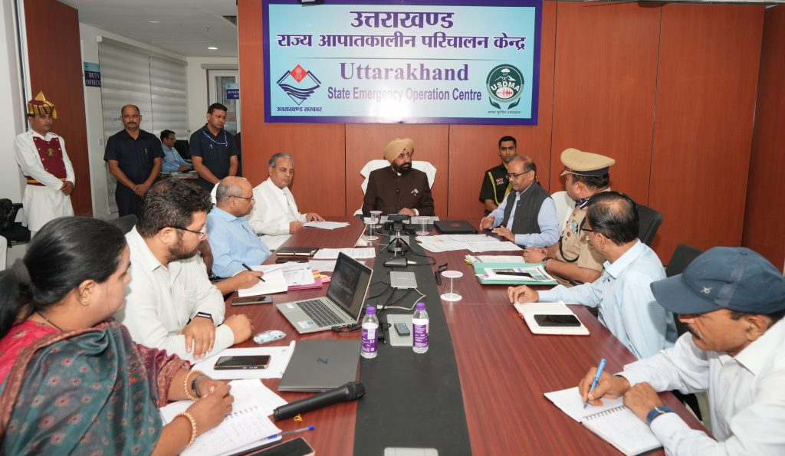
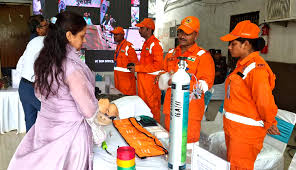
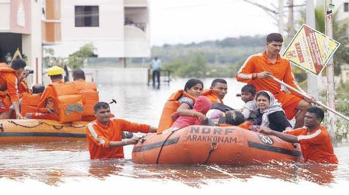
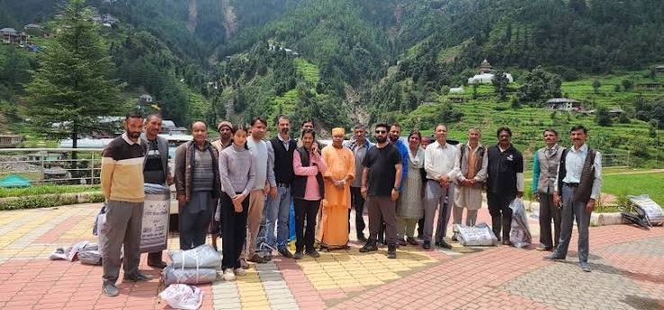
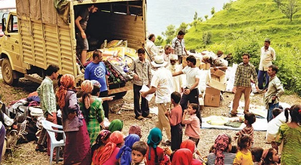
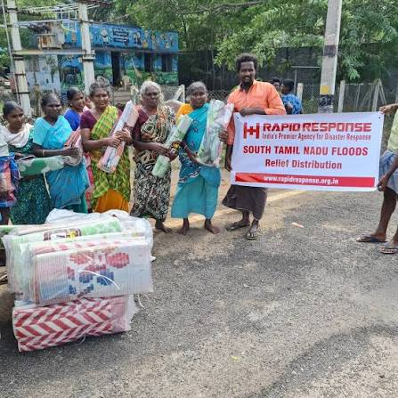
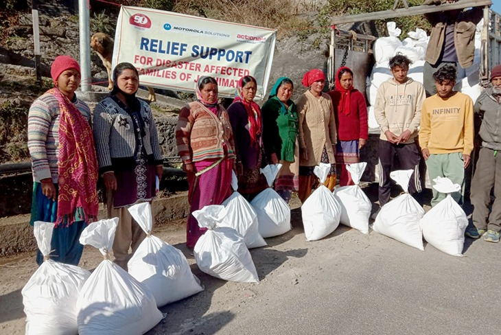
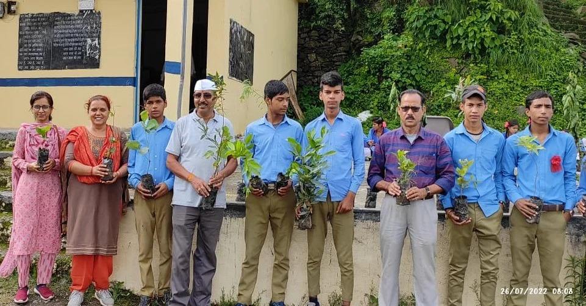
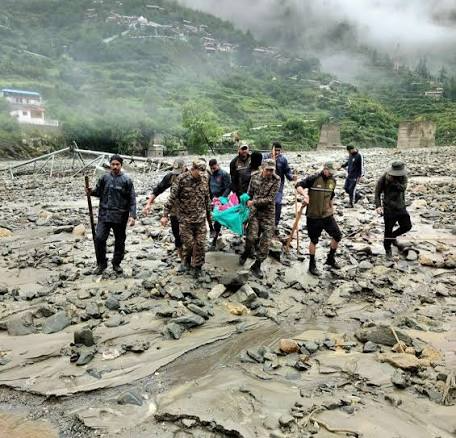

We only suggest trusted, official and verified websites

USDMA works on disaster preparedness, prevention, mitigation, emergency response, relief, and disaster management across Uttarakhand.
https://usdma.uk.gov.in/
HPSDMA works to strengthen disaster preparedness, risk reduction, emergency response, relief, and recovery efforts across Himachal Pradesh.
https://hpsdma.nic.in/
NDMA is India's central disaster management authority, responsible for disaster risk reduction, preparedness, mitigation, response, and national disaster management policies.
https://ndma.gov.in/
PPHF works to improve public health and strengthen communities through health programmes, capacity building, research, and development initiatives.
https://pphfglobal.org/Helfen Foundation works on social development and humanitarian initiatives aimed at supporting vulnerable communities and improving access to essential assistance.
https://helfenfoundation.org/
Uday Foundation works to support underprivileged communities through healthcare assistance, food, education, and humanitarian support programmes.
https://www.udayfoundation.org/
Rapid Response works on humanitarian relief and disaster response, providing support to communities affected by emergencies and natural disasters.
https://www.rapidresponse.org.in/
JanMaitri works with communities on social development, livelihoods, education, health, disaster preparedness, and other initiatives aimed at improving community well-being.
https://www.janmaitri.org/
Samoon Foundation works for social welfare and community development, supporting people through initiatives focused on education, livelihoods, health, and community empowerment.
https://samoonfoundation.org/
CARE India works to reduce poverty and inequality through programmes supporting health, education, livelihoods, gender equality, disaster response, and vulnerable communities.
https://www.careindia.org/